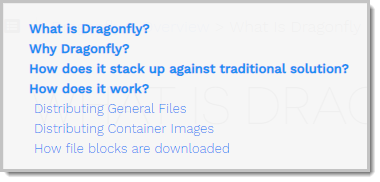
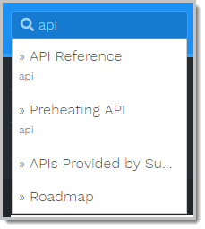
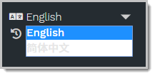

如何使用本网站
Before getting started, let’s take a quick look at how to use this documentation portal of Dragonfly.
Navigating
With a rich set of navigation features, you can always locate your target resource at ease.
Navigating to the homepage
To go to the homepage of the Dragonfly documentation portal, do one of the following:
- In the breadcrumb of any page, click Dragonfly.
- In the address bar of the browser, type
https://alibaba.github.io/Dragonfly/and press Enter.
Navigating to a topic
To navigate to a topic, do one of the following:
- In the left-side navigation pane, click a chapter title to expand this chapter, and then click a child topic.
- In the left-side navigation pane, click a chapter title, and then on the right-side reading pane, click the child topic link.
Navigating to a specific section of a topic
Some topics can be lengthy. To jump to a specific section, do the following:
Hover-over the mini TOC icon in the breadcrumb.

In the mini TOC overlay, click a section heading.

Navigating to other related resources
To navigate to other related resources, such as the Dragonfly roadmap, github repo, contributing guide, and so on, click the link under More in the left-side navigation pane.
Searching
Given that the Dragonfly documentation portal is a static website, you can find target information in a blink of an eye.
To perform a search, type your key words in the search box on the top of the left-side navigation pane, and matching results will appear in the overlay.

In the search results, click any link to jump to the topic, and your key words will be highlighted in yellow.
Switching display language
The Dragonfly documentation portal is a multi-language website.
To switch the display language, in the left-side navigation pane, select a language in the language drop-down list.

Improving the documentation
If you see a typo, or just feel like adding your insights, don’t hesitate to click the Edit this page link in the breadcrumb. Then you’ll be prompted to sign in your Github account and fork the repository.
For instructions on how to contribute to the documentation, see Contributing Guide.